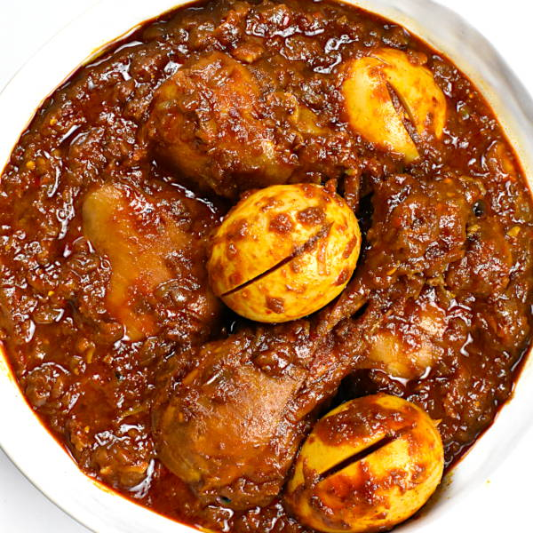

Home
Kitfo
Shiro
Doro wot

Description
Doro Wat is Ethiopia's national dish a rich, deeply spiced chicken stew
simmered slowly in berbere (a fiery Ethiopian spice blend) and caramelized
onions until the sauce turns thick and dark red. Hard-boiled eggs are added
near the end, soaking up all that flavor. It's traditionally served with
injera, a soft sourdough flatbread used to scoop up the stew instead of
cutlery.
The dish takes patience the onions alone can take 30 to 45 minutes to cook
down properly but that slow process is what builds its signature deep,
smoky flavor. It's usually reserved for special occasions and holidays in
Ethiopian households.
Ingredients
- 1 whole chicken, cut into pieces
- 4-6 large red onions, finely chopped
- 1/2 cup berbere spice
- 1/2 cup niter kibbeh (Ethiopian spiced butter) or regular butter
- 4 cloves garlic, minced
- 1 tbsp fresh ginger, minced
- 4-6 hard-boiled eggs, peeled and lightly scored
- 1 tsp ground cardamom
- Salt, to taste
- 1-2 cups water or chicken broth
Steps
- Rinse the chicken pieces with lemon or lime juice and water, then set aside.
- In a large pot, cook the chopped onions over medium heat with no oil, stirring frequently, until they soften and release their liquid (about 15-20 minutes).
- Add the niter kibbeh (or butter) and continue cooking the onions until they turn deep golden brown.
- Stir in the garlic and ginger, cooking for another 2-3 minutes until fragrant.
- Add the berbere spice and cardamom, stirring well to coat the onions and cook out the rawness of the spices (about 5 minutes).
- Pour in the water or broth and bring to a simmer.
- Add the chicken pieces, cover, and simmer for 30-40 minutes, stirring occasionally, until the chicken is cooked through and the sauce has thickened.
- Gently add the hard-boiled eggs, spooning some sauce over them, and simmer for another 5-10 minutes so they absorb the flavor.
- Season with salt to taste, and serve hot with injera.